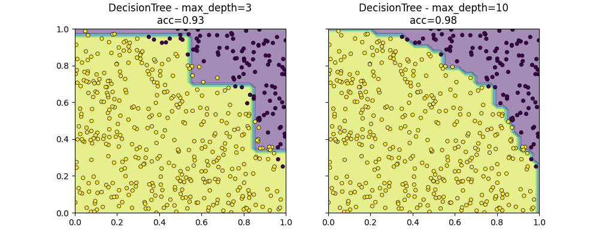
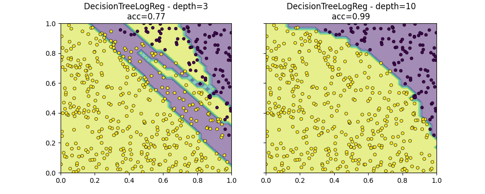

Note
Go to the end to download the full example code
Decision Tree and Logistic Regression#
The notebook demonstrates the model DecisionTreeLogisticRegression which replaces the decision based on one variable by a logistic regression.
Iris dataset and logistic regression#
The following code shows the border defined by two machine learning models on the Iris dataset.
import numpy
from scipy.spatial.distance import cdist
import matplotlib.pyplot as plt
from pandas import DataFrame
from tqdm import tqdm
from sklearn.datasets import load_iris
from sklearn.linear_model import LogisticRegression
from sklearn.model_selection import train_test_split
from sklearn.tree import DecisionTreeClassifier
from mlinsights.mlmodel import DecisionTreeLogisticRegression
from mlinsights.mltree import predict_leaves
def plot_classifier_decision_zone(clf, X, y, title=None, ax=None):
if ax is None:
ax = plt.gca()
x_min, x_max = X[:, 0].min() - 1, X[:, 0].max() + 1
y_min, y_max = X[:, 1].min() - 1, X[:, 1].max() + 1
dhx = (x_max - x_min) / 100
dhy = (y_max - y_min) / 100
xx, yy = numpy.meshgrid(
numpy.arange(x_min, x_max, dhx), numpy.arange(y_min, y_max, dhy)
)
Z = clf.predict(numpy.c_[xx.ravel(), yy.ravel()])
Z = Z.reshape(xx.shape)
ax.contourf(xx, yy, Z, alpha=0.5)
ax.scatter(X[:, 0], X[:, 1], c=y, s=20, edgecolor="k", lw=0.5)
if title is not None:
ax.set_title(title)
iris = load_iris()
X = iris.data[:, [0, 2]]
y = iris.target
y = y % 2
X_train, X_test, y_train, y_test = train_test_split(X, y, test_size=0.6, shuffle=True)
lr = LogisticRegression()
lr.fit(X_train, y_train)
dt = DecisionTreeClassifier(criterion="entropy")
dt.fit(X_train, y_train)

The logistic regression is not very stable on this sort of problem. No linear separator can work on this dataset. Let’s dig into it.
DecisionTreeLogisticRegression#
dtlr = DecisionTreeLogisticRegression(
estimator=LogisticRegression(solver="liblinear"),
min_samples_leaf=10,
min_samples_split=10,
max_depth=1,
fit_improve_algo="none",
)
dtlr.fit(X_train, y_train)
dtlr2 = DecisionTreeLogisticRegression(
estimator=LogisticRegression(solver="liblinear"),
min_samples_leaf=4,
min_samples_split=4,
max_depth=10,
fit_improve_algo="intercept_sort_always",
)
dtlr2.fit(X_train, y_train)
fig, ax = plt.subplots(2, 2, figsize=(10, 8))
plot_classifier_decision_zone(
dtlr,
X_train,
y_train,
ax=ax[0, 0],
title="DecisionTreeLogisticRegression\ndepth=%d - train" % dtlr.tree_depth_,
)
plot_classifier_decision_zone(
dtlr2,
X_train,
y_train,
ax=ax[0, 1],
title="DecisionTreeLogisticRegression\ndepth=%d - train" % dtlr2.tree_depth_,
)
plot_classifier_decision_zone(
dtlr,
X_test,
y_test,
ax=ax[1, 0],
title="DecisionTreeLogisticRegression\ndepth=%d - test" % dtlr.tree_depth_,
)
plot_classifier_decision_zone(
dtlr2,
X_test,
y_test,
ax=ax[1, 1],
title="DecisionTreeLogisticRegression\ndepth=%d - test" % dtlr2.tree_depth_,
)
A first example#
def random_set_simple(n):
X = numpy.random.rand(n, 2)
y = ((X[:, 0] ** 2 + X[:, 1] ** 2) <= 1).astype(numpy.int32).ravel()
return X, y
X, y = random_set_simple(2000)
X_train, X_test, y_train, y_test = train_test_split(X, y)
dt = DecisionTreeClassifier(max_depth=3)
dt.fit(X_train, y_train)
dt8 = DecisionTreeClassifier(max_depth=10)
dt8.fit(X_train, y_train)
fig, ax = plt.subplots(1, 2, figsize=(10, 4), sharey=True)
plot_classifier_decision_zone(
dt,
X_test,
y_test,
ax=ax[0],
title="DecisionTree - max_depth=%d\nacc=%1.2f"
% (dt.max_depth, dt.score(X_test, y_test)),
)
plot_classifier_decision_zone(
dt8,
X_test,
y_test,
ax=ax[1],
title="DecisionTree - max_depth=%d\nacc=%1.2f"
% (dt8.max_depth, dt8.score(X_test, y_test)),
)
ax[0].set_xlim([0, 1])
ax[1].set_xlim([0, 1])
ax[0].set_ylim([0, 1])
dtlr = DecisionTreeLogisticRegression(
max_depth=3, fit_improve_algo="intercept_sort_always", verbose=1
)
dtlr.fit(X_train, y_train)
dtlr8 = DecisionTreeLogisticRegression(
max_depth=10, min_samples_split=4, fit_improve_algo="intercept_sort_always"
)
dtlr8.fit(X_train, y_train)
fig, ax = plt.subplots(1, 2, figsize=(10, 4), sharey=True)
plot_classifier_decision_zone(
dtlr,
X_test,
y_test,
ax=ax[0],
title="DecisionTreeLogReg - depth=%d\nacc=%1.2f"
% (dtlr.tree_depth_, dtlr.score(X_test, y_test)),
)
plot_classifier_decision_zone(
dtlr8,
X_test,
y_test,
ax=ax[1],
title="DecisionTreeLogReg - depth=%d\nacc=%1.2f"
% (dtlr8.tree_depth_, dtlr8.score(X_test, y_test)),
)
ax[0].set_xlim([0, 1])
ax[1].set_xlim([0, 1])
ax[0].set_ylim([0, 1])
- 
- 
[DTLR ] trained acc 0.96 N=1500
[DTLRI] change intercept 11.733938 --> 10.864951 in [0.631566, 16.764758]
[DTLR*] above: n_class=2 N=1500 - 1061/1500
[DTLR ] trained acc 0.99 N=1061
[DTLRI] change intercept 5.964473 --> 1.563606 in [0.117224, 2.150483]
[DTLR*] above: n_class=1 N=1061 - 703/1500
[DTLR*] below: n_class=2 N=1061 - 358/1500
[DTLR ] trained acc 0.97 N=358
[DTLRI] change intercept 4.085039 --> 0.649570 in [0.383861, 0.865644]
[DTLR*] below: n_class=2 N=1500 - 439/1500
[DTLR ] trained acc 0.78 N=439
[DTLRI] change intercept 5.964094 --> 6.875640 in [6.163797, 9.577774]
[DTLR*] above: n_class=2 N=439 - 151/1500
[DTLR ] trained acc 0.64 N=151
[DTLRI] change intercept 1.373149 --> 0.819189 in [0.711789, 0.907672]
[DTLR*] below: n_class=2 N=439 - 288/1500
[DTLR ] trained acc 1.00 N=288
[DTLRI] change intercept -5.501924 --> 0.161122 in [0.108653, 0.192794]
(0.0, 1.0)
def draw_border(
clr,
X,
y,
fct=None,
incx=0.1,
incy=0.1,
figsize=None,
border=True,
ax=None,
s=10.0,
linewidths=0.1,
):
h = 0.02
x_min, x_max = X[:, 0].min() - incx, X[:, 0].max() + incx
y_min, y_max = X[:, 1].min() - incy, X[:, 1].max() + incy
xx, yy = numpy.meshgrid(
numpy.arange(x_min, x_max, h), numpy.arange(y_min, y_max, h)
)
if fct is None:
Z = clr.predict(numpy.c_[xx.ravel(), yy.ravel()])
else:
Z = fct(clr, numpy.c_[xx.ravel(), yy.ravel()])
# Put the result into a color plot
cmap = plt.cm.tab20
Z = Z.reshape(xx.shape)
if ax is None:
fig, ax = plt.subplots(1, 1, figsize=figsize or (4, 3))
ax.pcolormesh(xx, yy, Z, cmap=cmap)
# Plot also the training points
ax.scatter(
X[:, 0], X[:, 1], c=y, edgecolors="k", cmap=cmap, s=s, linewidths=linewidths
)
ax.set_xlim(xx.min(), xx.max())
ax.set_ylim(yy.min(), yy.max())
return ax
fig, ax = plt.subplots(1, 2, figsize=(14, 4))
draw_border(dt, X_test, y_test, border=False, ax=ax[0])
ax[0].set_title("Iris")
draw_border(dt, X, y, border=False, ax=ax[1], fct=lambda m, x: predict_leaves(m, x))
ax[1].set_title("DecisionTree")
Text(0.5, 1.0, 'DecisionTree')
fig, ax = plt.subplots(6, 4, figsize=(12, 16))
for i, depth in tqdm(enumerate((1, 2, 3, 4, 5, 6))):
dtl = DecisionTreeLogisticRegression(
max_depth=depth, fit_improve_algo="intercept_sort_always", min_samples_leaf=2
)
dtl.fit(X_train, y_train)
draw_border(dtl, X_test, y_test, border=False, ax=ax[i, 0], s=4.0)
draw_border(
dtl,
X,
y,
border=False,
ax=ax[i, 1],
fct=lambda m, x: predict_leaves(m, x),
s=4.0,
)
ax[i, 0].set_title(
"Depth=%d nodes=%d score=%1.2f"
% (dtl.tree_depth_, dtl.n_nodes_, dtl.score(X_test, y_test))
)
ax[i, 1].set_title("DTLR Leaves zones")
dtl = DecisionTreeClassifier(max_depth=depth)
dtl.fit(X_train, y_train)
draw_border(dtl, X_test, y_test, border=False, ax=ax[i, 2], s=4.0)
draw_border(
dtl,
X,
y,
border=False,
ax=ax[i, 3],
fct=lambda m, x: predict_leaves(m, x),
s=4.0,
)
ax[i, 2].set_title(
"Depth=%d nodes=%d score=%1.2f"
% (dtl.max_depth, dtl.tree_.node_count, dtl.score(X_test, y_test))
)
ax[i, 3].set_title("DT Leaves zones")
for k in range(ax.shape[1]):
ax[i, k].get_xaxis().set_visible(False)
![Depth=1 nodes=1 score=0.92, DTLR Leaves zones, Depth=1 nodes=3 score=0.80, DT Leaves zones, Depth=2 nodes=3 score=0.72, DTLR Leaves zones, Depth=2 nodes=7 score=0.90, DT Leaves zones, Depth=3 nodes=7 score=0.75, DTLR Leaves zones, Depth=3 nodes=15 score=0.95, DT Leaves zones, Depth=4 nodes=13 score=0.83, DTLR Leaves zones, Depth=4 nodes=31 score=0.96, DT Leaves zones, Depth=5 nodes=23 score=0.89, DTLR Leaves zones, Depth=5 nodes=49 score=0.98, DT Leaves zones, Depth=6 nodes=35 score=0.94, DTLR Leaves zones, Depth=6 nodes=59 score=0.98, DT Leaves zones](../_images/sphx_glr_plot_decision_tree_logreg_006.png)
0it [00:00, ?it/s]
1it [00:00, 7.56it/s]
2it [00:00, 6.43it/s]
3it [00:00, 5.80it/s]
4it [00:00, 5.24it/s]
5it [00:00, 4.85it/s]
6it [00:01, 4.48it/s]
6it [00:01, 4.98it/s]
Another example designed to fail#
Designed to be difficult with a regular decision tree.
def random_set(n):
X = numpy.random.rand(n, 2)
y = (
(cdist(X, numpy.array([[0.5, 0.5]]), metric="minkowski", p=1) <= 0.5)
.astype(numpy.int32)
.ravel()
)
return X, y
X, y = random_set(2000)
X_train, X_test, y_train, y_test = train_test_split(X, y)
dt = DecisionTreeClassifier(max_depth=3)
dt.fit(X_train, y_train)
dt8 = DecisionTreeClassifier(max_depth=10)
dt8.fit(X_train, y_train)
fig, ax = plt.subplots(1, 2, figsize=(10, 4), sharey=True)
plot_classifier_decision_zone(
dt,
X_test,
y_test,
ax=ax[0],
title="DecisionTree - max_depth=%d\nacc=%1.2f"
% (dt.max_depth, dt.score(X_test, y_test)),
)
plot_classifier_decision_zone(
dt8,
X_test,
y_test,
ax=ax[1],
title="DecisionTree - max_depth=%d\nacc=%1.2f"
% (dt8.max_depth, dt8.score(X_test, y_test)),
)
ax[0].set_xlim([0, 1])
ax[1].set_xlim([0, 1])
ax[0].set_ylim([0, 1])
(0.0, 1.0)
The example is a square rotated by 45 degrees. Every sample in the square is a positive sample, every sample outside is a negative one. The tree approximates the border with horizontal and vertical lines.
dtlr = DecisionTreeLogisticRegression(
max_depth=3, fit_improve_algo="intercept_sort_always", verbose=1
)
dtlr.fit(X_train, y_train)
dtlr8 = DecisionTreeLogisticRegression(
max_depth=10, min_samples_split=4, fit_improve_algo="intercept_sort_always"
)
dtlr8.fit(X_train, y_train)
fig, ax = plt.subplots(1, 2, figsize=(10, 4), sharey=True)
plot_classifier_decision_zone(
dtlr,
X_test,
y_test,
ax=ax[0],
title="DecisionTreeLogReg - depth=%d\nacc=%1.2f"
% (dtlr.tree_depth_, dtlr.score(X_test, y_test)),
)
plot_classifier_decision_zone(
dtlr8,
X_test,
y_test,
ax=ax[1],
title="DecisionTreeLogReg - depth=%d\nacc=%1.2f"
% (dtlr8.tree_depth_, dtlr8.score(X_test, y_test)),
)
ax[0].set_xlim([0, 1])
ax[1].set_xlim([0, 1])
ax[0].set_ylim([0, 1])
[DTLR ] trained acc 0.48 N=1500
[DTLRI] change intercept -0.226865 --> -0.205017 in [-0.401167, -0.001728]
[DTLR*] above: n_class=2 N=1500 - 748/1500
[DTLR ] trained acc 0.73 N=748
[DTLRI] change intercept 4.543769 --> 4.556728 in [2.386116, 6.248029]
[DTLR*] above: n_class=2 N=748 - 376/1500
[DTLR ] trained acc 0.73 N=376
[DTLRI] change intercept 1.666743 --> 0.656455 in [0.215070, 1.001971]
[DTLR*] below: n_class=2 N=748 - 372/1500
[DTLR ] trained acc 0.73 N=372
[DTLRI] change intercept 1.484916 --> 2.442535 in [2.099392, 2.983454]
[DTLR*] below: n_class=2 N=1500 - 752/1500
[DTLR ] trained acc 0.76 N=752
[DTLRI] change intercept -2.219823 --> -2.143683 in [-4.610461, -0.014381]
[DTLR*] above: n_class=2 N=752 - 364/1500
[DTLR ] trained acc 0.76 N=364
[DTLRI] change intercept 0.784121 --> -0.341406 in [-0.953351, 0.220115]
[DTLR*] below: n_class=2 N=752 - 388/1500
[DTLR ] trained acc 0.77 N=388
[DTLRI] change intercept -1.995121 --> -0.837341 in [-1.296903, -0.011262]
(0.0, 1.0)
Leave zones#
# We use method *decision_path* to understand which leaf is responsible
# for which zone.
fig, ax = plt.subplots(1, 2, figsize=(14, 4))
draw_border(dtlr, X_test, y_test, border=False, ax=ax[0])
ax[0].set_title("Iris")
draw_border(dtlr, X, y, border=False, ax=ax[1], fct=lambda m, x: predict_leaves(m, x))
ax[1].set_title("DecisionTreeLogisticRegression")
Text(0.5, 1.0, 'DecisionTreeLogisticRegression')
fig, ax = plt.subplots(6, 4, figsize=(12, 16))
for i, depth in tqdm(enumerate((1, 2, 3, 4, 5, 6))):
dtl = DecisionTreeLogisticRegression(
max_depth=depth, fit_improve_algo="intercept_sort_always", min_samples_leaf=2
)
dtl.fit(X_train, y_train)
draw_border(dtl, X_test, y_test, border=False, ax=ax[i, 0], s=4.0)
draw_border(
dtl,
X,
y,
border=False,
ax=ax[i, 1],
fct=lambda m, x: predict_leaves(m, x),
s=4.0,
)
ax[i, 0].set_title(
"Depth=%d nodes=%d score=%1.2f"
% (dtl.tree_depth_, dtl.n_nodes_, dtl.score(X_test, y_test))
)
ax[i, 1].set_title("DTLR Leaves zones")
dtl = DecisionTreeClassifier(max_depth=depth)
dtl.fit(X_train, y_train)
draw_border(dtl, X_test, y_test, border=False, ax=ax[i, 2], s=4.0)
draw_border(
dtl,
X,
y,
border=False,
ax=ax[i, 3],
fct=lambda m, x: predict_leaves(m, x),
s=4.0,
)
ax[i, 2].set_title(
"Depth=%d nodes=%d score=%1.2f"
% (dtl.max_depth, dtl.tree_.node_count, dtl.score(X_test, y_test))
)
ax[i, 3].set_title("DT Leaves zones")
![Depth=1 nodes=1 score=0.53, DTLR Leaves zones, Depth=1 nodes=3 score=0.65, DT Leaves zones, Depth=2 nodes=3 score=0.74, DTLR Leaves zones, Depth=2 nodes=7 score=0.76, DT Leaves zones, Depth=3 nodes=7 score=0.57, DTLR Leaves zones, Depth=3 nodes=13 score=0.79, DT Leaves zones, Depth=4 nodes=15 score=0.75, DTLR Leaves zones, Depth=4 nodes=23 score=0.86, DT Leaves zones, Depth=5 nodes=31 score=0.82, DTLR Leaves zones, Depth=5 nodes=39 score=0.87, DT Leaves zones, Depth=6 nodes=59 score=0.79, DTLR Leaves zones, Depth=6 nodes=61 score=0.92, DT Leaves zones](../_images/sphx_glr_plot_decision_tree_logreg_010.png)
0it [00:00, ?it/s]
1it [00:00, 8.82it/s]
2it [00:00, 7.08it/s]
3it [00:00, 5.79it/s]
4it [00:00, 4.87it/s]
5it [00:01, 4.13it/s]
6it [00:01, 3.49it/s]
6it [00:01, 4.22it/s]
Total running time of the script: (0 minutes 8.649 seconds)